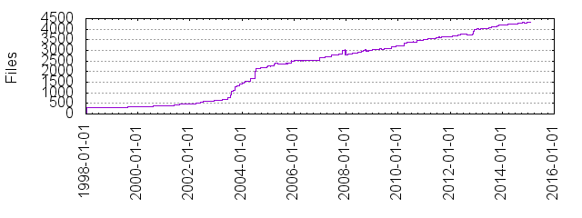

Files
- Total files
- 4331
- Total lines
- 1767846
- Average file size
- 11605.98 bytes

| Extension | Files (%) | Lines (%) | Lines/file |
|---|
| 223 (5.15%) | 23930 (1.35%) | 107 |
| 0 | 7 (0.16%) | 79845 (4.52%) | 11406 |
| 1 | 7 (0.16%) | 1749 (0.10%) | 249 |
| 1st | 3 (0.07%) | 57 (0.00%) | 19 |
| 2 | 1 (0.02%) | 509 (0.03%) | 509 |
| 25 | 1 (0.02%) | 6 (0.00%) | 6 |
| 3 | 2 (0.05%) | 93113 (5.27%) | 46556 |
| 5 | 1 (0.02%) | 6 (0.00%) | 6 |
| 7 | 1 (0.02%) | 669 (0.04%) | 669 |
| ActiveTcl | 1 (0.02%) | 62 (0.00%) | 62 |
| EXT | 1 (0.02%) | 1730 (0.10%) | 1730 |
| JP | 2 (0.05%) | 28 (0.00%) | 14 |
| atheos | 1 (0.02%) | 29 (0.00%) | 29 |
| awk | 2 (0.05%) | 38 (0.00%) | 19 |
| base | 1 (0.02%) | 25 (0.00%) | 25 |
| bash | 1 (0.02%) | 20 (0.00%) | 20 |
| bat | 5 (0.12%) | 362 (0.02%) | 72 |
| blt | 3 (0.07%) | 33125 (1.87%) | 11041 |
| c | 363 (8.38%) | 360655 (20.40%) | 993 |
| cgi | 5 (0.12%) | 107 (0.01%) | 21 |
| cmd | 1 (0.02%) | 18 (0.00%) | 18 |
| crt | 1 (0.02%) | 48 (0.00%) | 48 |
| css | 2 (0.05%) | 757 (0.04%) | 378 |
| csv | 1 (0.02%) | 5 (0.00%) | 5 |
| d | 1 (0.02%) | 234 (0.01%) | 234 |
| dat | 2 (0.05%) | 22 (0.00%) | 11 |
| def | 6 (0.14%) | 2558 (0.14%) | 426 |
| el | 8 (0.18%) | 3146 (0.18%) | 393 |
| emx | 1 (0.02%) | 31 (0.00%) | 31 |
| en | 2 (0.05%) | 20 (0.00%) | 10 |
| eng | 1 (0.02%) | 473 (0.03%) | 473 |
| erb | 2 (0.05%) | 41 (0.00%) | 20 |
| expected | 5 (0.12%) | 262 (0.01%) | 52 |
| fork | 1 (0.02%) | 34 (0.00%) | 34 |
| gemspec | 5 (0.12%) | 94 (0.01%) | 18 |
| gif | 178 (4.11%) | 2287 (0.13%) | 12 |
| gz | 2 (0.05%) | 218 (0.01%) | 109 |
| h | 141 (3.26%) | 59429 (3.36%) | 421 |
| html | 6 (0.14%) | 4263 (0.24%) | 710 |
| in | 9 (0.21%) | 5227 (0.30%) | 580 |
| ja | 14 (0.32%) | 4549 (0.26%) | 324 |
| js | 5 (0.12%) | 643 (0.04%) | 128 |
| json | 31 (0.72%) | 65 (0.00%) | 2 |
| kde | 2 (0.05%) | 853 (0.05%) | 426 |
| key | 1 (0.02%) | 15 (0.00%) | 15 |
| kwd | 2 (0.05%) | 26602 (1.50%) | 13301 |
| largedoc | 1 (0.02%) | 3 (0.00%) | 3 |
| mak | 2 (0.05%) | 223 (0.01%) | 111 |
| markdown | 9 (0.21%) | 145 (0.01%) | 16 |
| md | 4 (0.09%) | 352 (0.02%) | 88 |
| mk | 3 (0.07%) | 2498 (0.14%) | 832 |
| mp4 | 1 (0.02%) | 3230 (0.18%) | 3230 |
| msg | 28 (0.65%) | 2196 (0.12%) | 78 |
| mspec | 1 (0.02%) | 21 (0.00%) | 21 |
| nacl | 2 (0.05%) | 96 (0.01%) | 48 |
| nt | 1 (0.02%) | 30 (0.00%) | 30 |
| patch | 1 (0.02%) | 191 (0.01%) | 191 |
| pem | 41 (0.95%) | 998 (0.06%) | 24 |
| pl | 7 (0.16%) | 69 (0.00%) | 9 |
| png | 28 (0.65%) | 1275 (0.07%) | 45 |
| ppm | 1 (0.02%) | 30 (0.00%) | 30 |
| prev | 1 (0.02%) | 9 (0.00%) | 9 |
| pro | 1 (0.02%) | 21 (0.00%) | 21 |
| py | 6 (0.14%) | 61 (0.00%) | 10 |
| rb | 2824 (65.20%) | 783392 (44.31%) | 277 |
| rbw | 1 (0.02%) | 156 (0.01%) | 156 |
| rdoc | 25 (0.58%) | 6569 (0.37%) | 262 |
| rhtml | 21 (0.48%) | 549 (0.03%) | 26 |
| rl | 1 (0.02%) | 949 (0.05%) | 949 |
| rss | 2 (0.05%) | 222 (0.01%) | 111 |
| rz | 1 (0.02%) | 4 (0.00%) | 4 |
| s | 2 (0.05%) | 52 (0.00%) | 26 |
| scm | 6 (0.14%) | 41 (0.00%) | 6 |
| sed | 1 (0.02%) | 37 (0.00%) | 37 |
| sh | 3 (0.07%) | 110 (0.01%) | 36 |
| src | 50 (1.15%) | 134324 (7.60%) | 2686 |
| sub | 1 (0.02%) | 1177 (0.07%) | 1177 |
| svg | 1 (0.02%) | 2828 (0.16%) | 2828 |
| tcl | 13 (0.30%) | 1409 (0.08%) | 108 |
| tcltklib | 1 (0.02%) | 152 (0.01%) | 152 |
| terms | 3 (0.07%) | 117 (0.01%) | 39 |
| text | 22 (0.51%) | 1827 (0.10%) | 83 |
| tk80 | 4 (0.09%) | 170 (0.01%) | 42 |
| tkencoding | 1 (0.02%) | 29 (0.00%) | 29 |
| tkextlib | 1 (0.02%) | 949 (0.05%) | 949 |
| tmpl | 20 (0.46%) | 1445 (0.08%) | 72 |
| trans | 19 (0.44%) | 2513 (0.14%) | 132 |
| tst | 1 (0.02%) | 26 (0.00%) | 26 |
| ttf | 6 (0.14%) | 2609 (0.15%) | 434 |
| txt | 21 (0.48%) | 1059 (0.06%) | 50 |
| ucm | 4 (0.09%) | 76244 (4.31%) | 19061 |
| win32 | 1 (0.02%) | 141 (0.01%) | 141 |
| xbm | 15 (0.35%) | 2841 (0.16%) | 189 |
| xcf | 1 (0.02%) | 1 (0.00%) | 1 |
| xml | 56 (1.29%) | 27609 (1.56%) | 493 |
| xsl | 1 (0.02%) | 368 (0.02%) | 368 |
| y | 1 (0.02%) | 11374 (0.64%) | 11374 |
| yml | 1 (0.02%) | 105 (0.01%) | 105 |
| zsh | 1 (0.02%) | 38 (0.00%) | 38 |